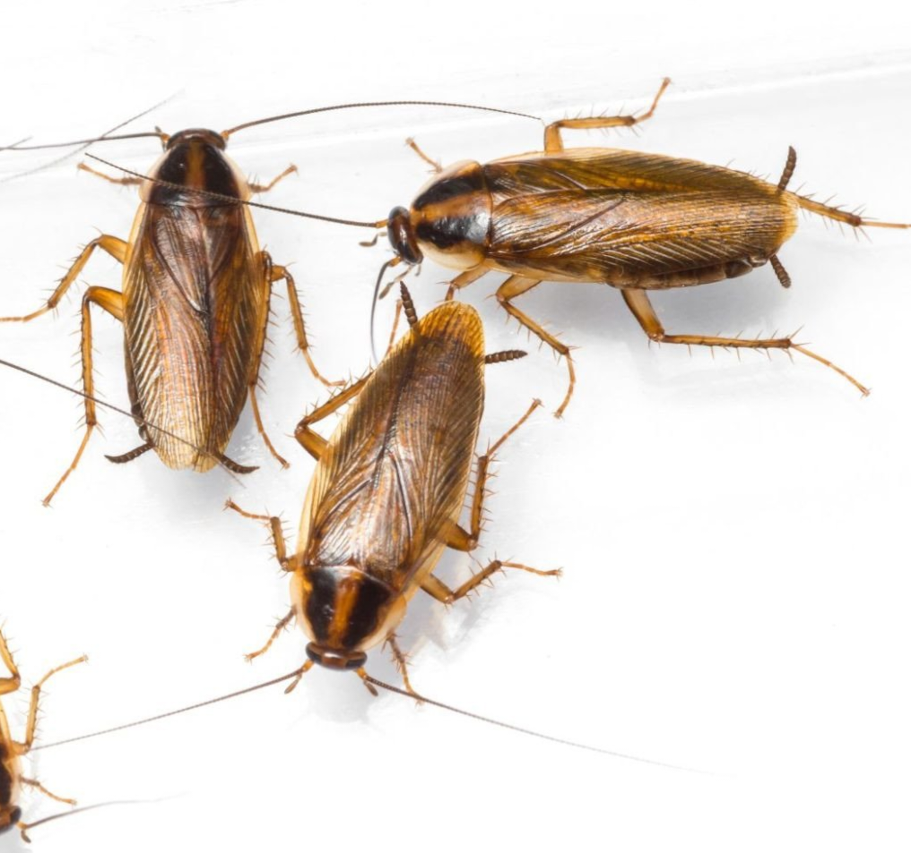

Home ›
Pests ›
German Cockroach
German Cockroach (Blattella germanica)

Description
The German cockroach is one of the most common indoor pests. It is found mainly in kitchens and bathrooms where water and food are available. It is known for its rapid reproduction and ability to hide in very small cracks.
Characteristics
- Small size (1–1.5 cm).
- Light brown color.
- Two dark lines on the thorax.
- Extremely fast reproduction.
- Prefers warm, humid environments.
Risks
- Contamination of food and surfaces.
- Can trigger allergies and asthma.
- Can mechanically carry bacteria and pathogens.
- High infestation potential if not controlled early.
Signs of infestation
- Visible activity in the kitchen or bathroom.
- Small dark droppings.
- A strong, unpleasant odor in large infestations.
- Egg cases (oothecae) hidden in protected areas.
Prevention
- Keep the kitchen clean and free of food residue.
- Seal cracks and crevices.
- Reduce moisture and repair leaks.
- Store food in airtight containers.
Professional control
Treatment usually requires strategic baits, continuous monitoring, and integrated pest management. At Bugs Or Us PR, we use products approved for residential use and apply them responsibly and safely, always prioritizing the safety of your family, pets, and the environment.
Service in: Bayamón, Corozal, Dorado, Manatí, Morovis, Naranjito, Toa Alta, Toa Baja, Vega Alta, and Vega Baja.
Related pests
Request Professional Service
← Back to Home